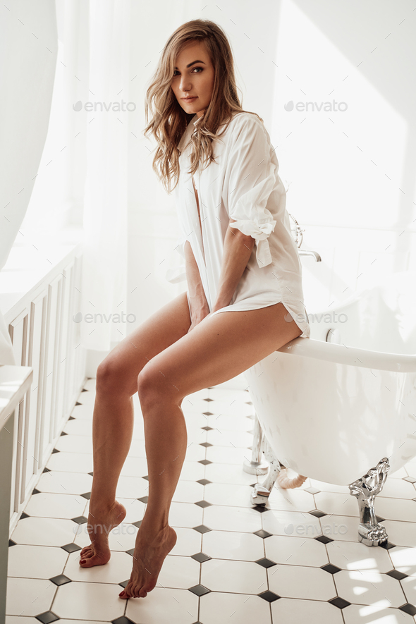
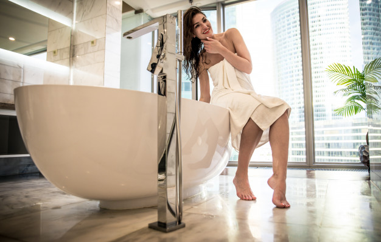
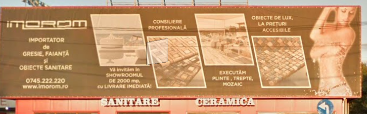
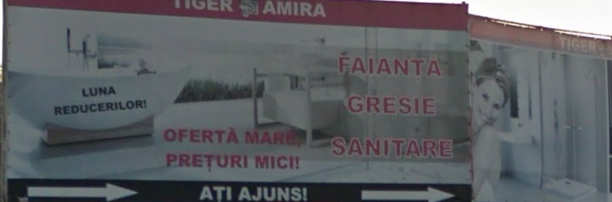
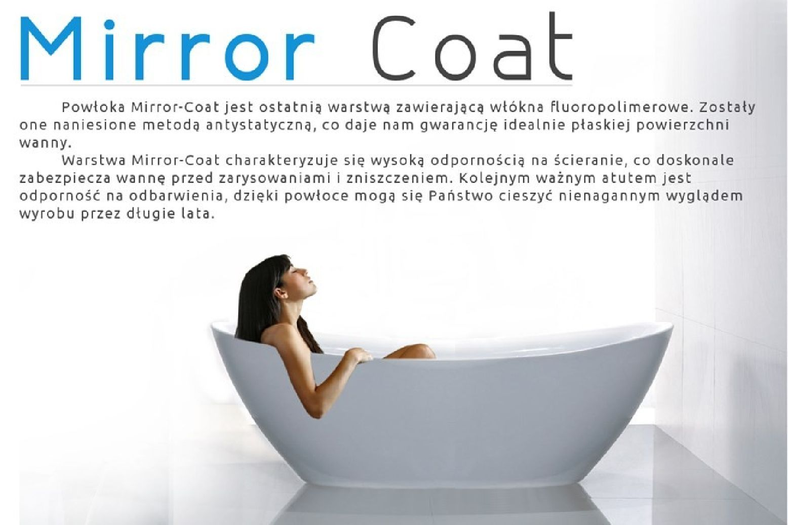
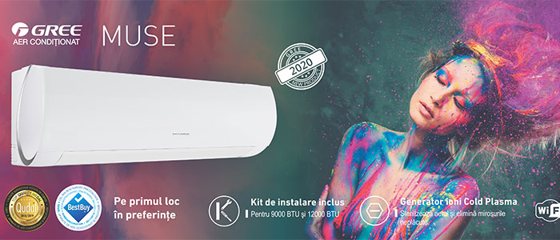
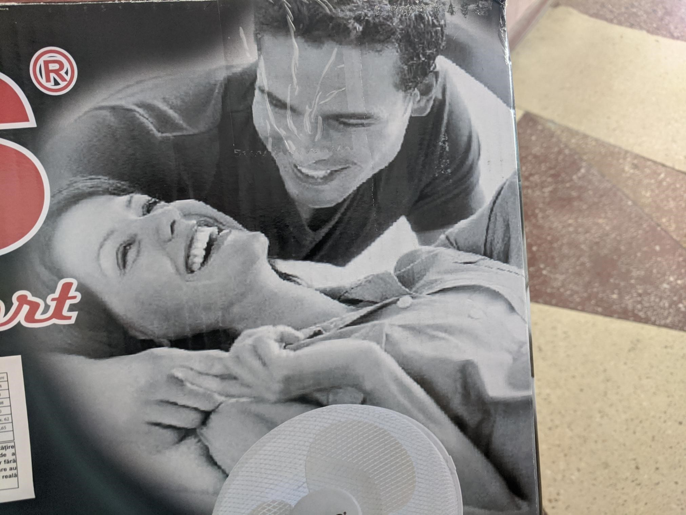

Te-ai întrebat vreodată de ce mai toate reclamele ce privesc confortul, curățenia și armonia casei sunt cu femei în diferite ipostaze? Fie la duș, poate pregătindu-se de-o baie în cadă, relaxându-se sub un aer condiționat sau ventilator ori pășind grațios pe gresia curată a unei băi luminoase.
Serios, uite-aci niște exemple (fără a face reclamă cuiva), ba chiar unele decupate de pe Google Street View (str. Valea Cascadelor din București):






La naiba, până și pe cutia unui ventilator ce-mi alină atmosfera pe timp de caniculă e aceeași idee. Ia uite-o, ea zice: „Aaaaa...răcoare, în sfârșit!”, iar el e ceva de genul: „Ei, vezi? E? E OK? Mai ai nevoie de ceva? Ești mai bine?”

Păi, ai putea spune că-i simplu: bărbații se ocupă de sanitare și amenajări. Doar că nu-i atât de trivial. Orice tip care își împarte viața și casa cu-o femeie știe că nu el este cel ce decide ce culoare și model va avea gresia din baie, ce culoare vor avea jaluzelele ori ce mânere să pui la mobila din bucătărie. Să fim sinceri, că dacă era după noi, trăiam înconjurați de câteva dulapuri metalice, chiuvetele erau ca alea din tablă de le mai vezi prin camping-urile vechi iar pe jos aveam linoleum. Nu mai zic de cromatică, deoarece carcalete mai inedit de culori incompatibile cu greu poți găsi altundeva decât în casa unui bărbat singur.
Normal, există și tipi care se pricep la capitolul ăsta, doar că i-aș împărți în trei categorii:
- Cei ce lucrează în domeniul amenajărilor și au trebuit să învețe toate astea
- Cei ce au mai trăit deja câțiva ani cu câte-o tipă prin casă
- Cei ce-și împart casa cu alți bărbați (ei fiind „the sensitive side” - lucru perfect OK și frumos; casa lor, viața lor, au tot dreptul)
Și totuși: de ce femei? Păi, bre, e ideea de Cuib. Dacă citești textul ăsta și n-ai 16 ani, cunoști faptul că o tipă faină nu vine la orice ciurli-burli nespălat și nearanjat prin a cărui casă i se lipesc șosetele de covor, parchet sau linoleum.
Și n-are treabă neapărat cu valoarea-n bani, deși reclamele alea arătate mai devreme sunt întâlnite mai mult prin mediul urban. Ai văzut oameni pe la țară ce-și mătură zilnic curtea și prin fața porții? Iar când intri în casă, e curat și albiturile sunt chiar albe și miros a curat? Știu, în prezent există multă delăsare prin mediul rural (sudic, mai ales), dar mergi prin Moldova sau Ardeal și-o să vezi la ce mă refer.
Serios, uite altă treabă interesantă de analizat: mergi în Gara de Nord din București, undeva pe la orele 10-10:30 dimineața. Fă o comparație între oamenii care vin sau pleacă dinspre Iași, Suceava, Botoșani și cei ce merg la Pitești, Craiova, Târgu Jiu. Mă refer la același rang de tren (IR), cu bilet de același preț. Ei, o să vezi că moldovenii ăia de care fac mișto bucureștenii (pentru că „vulpea care n-ajunge la struguri zice că-s acri și nu-i trebuie”) sunt cei mai prezentabili. Frumos aranjați, cu spatele drept și încrezători, cu un mic iz de parfum în urma lor (vorbesc despre ambele sexe). Și nu-i prea vezi aruncând flegme-n praf la fiecare 35 de secunde, indiferent de statutul social. Na de-aci temă de gândire :).
Revenind... Vrei mai mult de la viață, bărbat fiind? Trebuie să vrei mai mult de la tine. Constant. Adună-te nițel:
- Spală-te! Da, ăsta e primul pas, să te menții pe tine curat la nivel individual. Dar s-o faci pe bune, asumat, căci degeaba arăți relativ curat dacă, vorba cântecului, „ai lilieci în pantofi și telemea pe dinți”. Baia e locul din care trebuie să ieși mai curat decât ai intrat. N-ai nevoie de bani mulți, căci un Protex, o pastă de dinți (+ periuță) și-un antiperspirant bun iei cu 25 de lei (la un loc).
- Aranjează-te, prezintă-te frumos în lume, indiferent de calitățile ori defectele fizice (prea puțini dintre noi suntem Brad Pitt). Tuns, bărbierit, tăiat unghii, etc. hai că știi ce zic, sunt exact lucrurile cu care te stresa maică-ta atunci când erai mic iar ea era îngrozită de ideea că ai putea ajunge un ratat pe care nu-l va dori nicio tipă OK (căci bărbații mai praf ajung cu câte una din când în când, doar că-i la fel ca ei: nespălate, fără pretenții, ambiții sau perspective serioase)
- Nu mai fi atât de prost. Știu, e cel mai greu, dar ține minte că atunci când te trezești vorbind fără să te fi întrebat cineva ceva (adică așa cum fac eu acum ;) ), e posibil ca singurul lucru observabil pentru cei din jur să fie prostia ta, în toată splendoarea ei. Totodată, adu-ți aminte că „Nu tot ce zboară-i bun de haleală” și că „Nu-i bine să alergi după cai verzi pe pereți”.
- Fii mai umil, mai modest și realist. Acceptă-ți greșelile și inadcvarea și-ncearcă să le repari.
- Vrei o „Regină” (la modul non-manelistic vorbind)? Ei bine, asta spun reclamele: fă casa aia să arate frumos iar curățenia să fie de la sine înțeleasă; clădește un cuib bun (asta presupune că muncești și iei niște responsabilități în cârcă) iar apoi, dacă ești consecvent, i se va face vreunei tipe mai răsărite milă și de existența ta debusolată.
Râdem, glumim, dar mie-mi pare că reclamele astea fac apel la o întreagă filosofie de viață. Cam aceeași de mii de ani, de altfel. Până și păsările ori peștii își fac curat în cuib.
Depinde de tine pe cine-aduci în viață și, mai ales, dacă ești capabil s-o păstrezi alături.